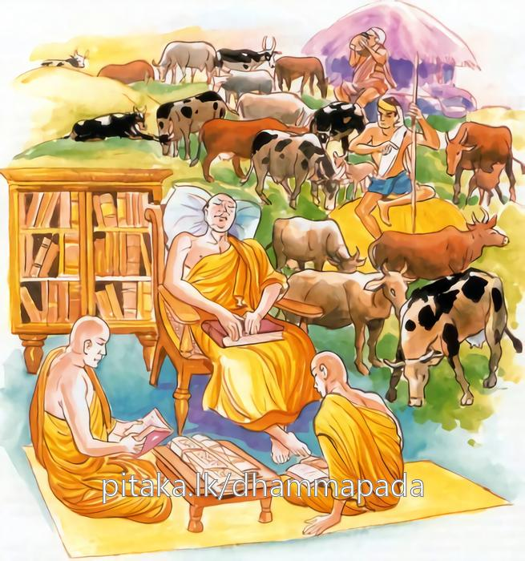

1-14 දහහතරවන යහළු භික්ෂු දෙනමගේ වස්තුවයි.
මෙම කතාව සද්ධර්ම සාගරයෙන් ද කියවන්න.
බහුම්පි චෙ සහිතං භාසමානො
න තක්කරො හොති නරො පමත්තො
ගොපො’ව ගාවො ගණයං පරෙසං
න භාගවා සාමඤ්ඤස්ස හොති.
යමෙක් ත්රිපිටක බුද්ධ වචනය බොහෝ කොට කියන්නේ නමුදු, තෙමේ පමා වූයේ, ඉදින් එය නො කරන්නේ (තමා කියන පරිදි නො පිළිපදනේ) නම්, හේ (කුලියට) අනුන් ගේ ගෙරින් රක්නා ගොපල්ලා මෙන් ශ්රාමණ්යයට (සතරඵලයනට) හිමි නො වෙයි.

අප්පම්පි චෙ සහිතං භාසමානො
ධම්මස්ස හොති අනුධම්මචාරී
රාගඤ්ච දොසඤ්ච පහාය මොහං
සම්මප්පජානො සුවිමුත්තචිත්තො
අනුපාදියානො ඉධ වා හුරං වා
ස භාගවා සාමඤ්ඤස්ස හොති.
යමෙක් ත්රිපිටක බුද්ධවචනය ස්වල්ප කොට කියන්නේ නමුදු, තෙමේ ධර්මානුධර්මප්රතිපත්තිය කරන්නේ නම්, (නවලෝකෝත්තර ධර්මයට අනුරූපව වූ පුර්වභාග ප්රතිපත්තිය කරන්නේ නම්), රාගයත් ද්වේෂයත් මෝහයත් නසා පිරිසිඳිය යුතු දහම් පිරිසිඳ දන්නේ, මෙලොවෙහි හෝ පරලොවෙහි හෝ (ආධ්යාත්මික හෝ බාහිර හෝ) කිසිදු ස්කන්ධ ධාතු ආයතනයක් තෘෂ්ණා දි වශයෙන් නො ගන්නේ ශ්රාමණ්යයට (සතර ඵලයටත් ආර්ය්යශිලාදී අකෛෂශ ධර්මස්කන්ධ පසටත්) හිමි වෙයි.
‘බහුම්පි චෙ’ ආදි මේ ධර්මදේශනාව බුදුරජාණන්වහන්සේ දෙව්රම වැඩවසන සමයෙහි යහළු භික්ෂූන් දෙනමක් අරභයා දේශනා කළ සේක.
සැවැත් නුවර වැසි යහළුකුලපුත්රයෝ දෙදෙනෙක් විහාරයට ගොස් බුදුන්ගේ ධර්මදේශනාව අසා වස්තූන් හැරදමා සසුනට ළයදී පැවිදිව පස්වසක් ආචාර්ය උපාධ්යයයන්වහන්සේ සමීපයෙහි වැස බුදුන්වෙත පැමිණ සසුනේ ධුර කෙතෙක්දැයි විචාරා විපස්සනාධූර ග්රන්ථධූරයන් විස්තර වශයෙන් අසා දැන එයින් එක්නමක්, ස්වාමීනි, මම මහලුකල පැවිදිවීමි. ග්රන්ථධූරය පුරන්නට අපොහොසත් වෙමි. විදර්ශනාධූරය පුරන්නෙමියි අර්හත්වය දක්වා විදර්ශනා කියවාගෙන බොහෝ වෑයම් කොට සිව්පිළිසිඹියා හා සමඟ රහත්බවට පැමිණියේය. අනිත් භික්ෂුව මම ග්රන්ථධූරය පුරන්නෙමියි පිළිවෙළින් ත්රිපිටක බුද්ධධර්මය උගෙන ගියගිය තැන්වල ධර්මදේශනා කෙරෙයි. මධුරස්වරයෙන් කථා කරයි. පන්සීයක් භික්ෂුන්ට ධර්මය කියාදෙයි. අටළොස් මහා සංඝගණයකට (පිරිසකට) ආචාර්යවරයා විය.
භික්ෂුහු බුදුන් වෙත පැමිණ කමටහන් ඉල්වාගෙන අනිත් විපස්සක තෙරුන් වසන තැනට ගොස් උන්වහන්සේගේ අවවාද අනුශාසනා පරිදි භාවනාකොට රහත්බවට පත්ව තෙරුන් වැඳ බුදුන් දකිනු කැමැත්තම්හයි කියති. තෙරණුවෝ ඇවැත්නී, යව්. මගේ වචනයෙන් බුදුන් වැඳ අසූමහාසවුතෙරවරුනුත් වදිව්. මගේ යහළු තෙරුන්ද අපේ ආචාර්යයන්වහන්සේ ඔබ වඳිතියි කියව්යයි පිටත් කොළෝය.
ඒ භික්ෂුහු විහාරයට ගොස් බුදුරදුන්ද, අසුමහතෙරවරුන්ද වැඳ ස්වාමීනි, අපේ ආචාර්යවරයන්වහන්සේ ඔබ වඳිතියි කීකල්හි අනිත් භික්ෂුව (ග්රන්ථ ධුරය පුරන) මේ කවුරුන්දැයි විචාළ කල්හි, ස්වාමීනි, ඔබගේ යහළු භික්ෂුවයයි කියති. මෙසේ ඒ (විපස්සක) තෙරුන් නැවත නැවතත් පණිවුඩ එවන කල්හි මද කලක් ඉවසා සිට මෑත භාගයෙහි එය ඉවසා සිටිය නොහැකිව අප ඇඳුරුතුමෝ ඔබ වඳිතියි කීකල, ඔබේ යහළු භික්ෂුවයයි දැන්වූ පසු තෙපි ඔවුන් ළඟින් කුමක් ඉගෙන ගත්තාහුදැයි අසා දීඝනිකාය ආදි සඟිවලින් කුමක් උගත්තුද, තුන්පිටකයෙන් එක් පිටකයක් හෝ උගත්තුද, සතරපද ගාථාවක් පවා නොදනියි. ඔහු පංශුකූල සිවුරු පොරවා පැවිදි වූ ළඟදීම කැලෑවට ගියේය. බොහෝ අතවැස්සන් නම් ලැබීය. ඔහු මෙහි ආවිට ප්රශ්න ඇසිය යුතුයයි සිතා ගත්තේය.
ඉන් පසු කාලයක අනික් (විපස්සක) තෙරණුවෝ බුදුන් දක්නට අවුත් යහළුතෙරුන් සමීපයෙහි පාසිවුරු තබා ගොස් බුදුන්ද අසූමහා ශ්රාවකයන්ද වැඳ යහළුතෙරුන්ගේ වාසස්ථානයට ආපසු පැමිණියෝය. ඒ ග්රන්ථධූරීන තෙරණුවෝ උන්වහන්සේට අවශ්ය වතාවත් කරවා, සමප්රමාණ අසුනක් ගෙන ප්රශ්න විචාරන්නෙමියි හිඳගත්හ. එකෙණෙහි ශාස්තෘන්වහන්සේ, මේ තෙමේ මගේ මෙබඳු පුතණුවන් වෙහෙසා අපාගතවන්නේයයි ඔහු කෙරෙහි අනුකම්පාවෙන් විහාර චාරිකාවේ හැසිරෙන්නාක් මෙන් ඔවුන් සිටි තැනට වැඩමවා පැනවූ බුද්ධාසනයෙහි වැඩහුන්සේක. ඒ ඒ තැන්වල වැඩහිඳින භික්ෂුහු බුද්ධාසනයක් පනවා හිඳිත්මය. ශාස්තෘන්වහන්සේ ප්රකෘතියෙන්ම එසේ පනවා තිබූ අසුන්හි වැඩහුන්සේක. එසේ වැඩසිට ග්රන්ථධූරීන භික්ෂුවගෙන් ප්රථමධ්යානය පිළිබඳවද, රූපාරූපසමාපත්ති පිළිබඳවද ප්රශ්න විචාළසේක. අනිත් තැනැත්තේ ඒ සියල්ලට පිළිතුරු දුන්නේය.
ඉන් අනතුරුව ඒ භික්ෂුවගෙන් සෝවාන් මාර්ගය පිළිබඳ ප්රශ්නයක් විචාළෝය. ග්රන්ථධූරීන භික්ෂුවට එය කියනු නොහැකිවිය. ඉන්පසු ක්ෂීණාශ්රව (විදර්ශක) තෙරණුවන්ගෙන් ඒ ප්රශ්නයම අසන ලදහ. තෙරණුවෝ ඊට පිළිතුරු දුන්හ. ශාස්තෘන්වහන්සේ සාධුකාරයෙන් එය යහපතැයි පිළිගත්සේක. එසේ සතුට පළකොට සෙසු මාර්ගයන් පිළිබඳවද පිළිවෙළින් ප්රශ්න විචාළහ. ග්රන්ථක භික්ෂුව ඒ එකකට හෝ පිළිතුරු දීමට අපොහොසත්වූ අතර ක්ෂීණාශ්රව රහතන්වහන්සේ විචාළ විචාළ ප්රශ්න විසඳාලූහ. ශාස්තෘන්වහන්සේ මෙසේ සතර තැනක සාධුකාර දුන්සේක.
ඒ අසා සිටි භූම්යස්ථ (පොළාව ඇසුරෙහි සිටින) දෙවියන් ආදිකොට ඇති බඹලොව දක්වා සියලු දෙවියෝද, නාග සුපර්ණයෝද සාධුකාර දුන්හ. ඒ සාධුකාරය අසා ඒ ග්රන්ථික භික්ෂුවගේ අතවැසියෝත්, සද්ධිවිහාරිකයෝත්, බුදුරදුන් විසින් මේ කරන ලද්දේ කුමක්ද? කිසිවක්ම නොදන්නා මහලු තෙරුන්ට සිවුතැනකදී සාධුකාර දුන්හ. සකල පර්යාප්තිධර, (ත්රිපිටකධාරී) භික්ෂූන් පන්සීයකට ප්රධාන අපේ ආචාර්යයන්වහන්සේට ප්රශංසා මාත්රයකුදු නැත යනුවෙන් දොස් කියන්ට වූහ.
ඉක්බිති තථාගතයන්වහන්සේ මේ කියන්නේ මොනවාදැයි විචාරා ඒ කරුණ දන්වා සිටිපසු, මහණෙනි, තොපගේ ගුරුවරයා මගේ සසුනෙහි, කුලියට හරකුන් රකින ගොපල්ලෙකු මෙනි. මගේ පුත් විදර්ශක භික්ෂුව මනාප පරිද්දෙන් පස්ගෝරසයන් පරිභෝජනය කරන ගව ස්වාමියෙකු වැනියයි වදාරා මේ ගාථාවද ප්රකාශ කළහ:
බණදහම් දැනගෙන කියන නමුත් එහි නොයෙදෙන
ගොපල්ලෙකි ඔහු නම් අනුන් හරකුන් බලාගන්නා
ඔහුට පස්ගෝරස බිඳක් හෝ නොලැබී යයි
ටිකක් බණ දැනගෙන කියන දහමෙහි හැසිරෙන
රා දොස් මෝහ හැරදා මිදුණු සිතකින් යුතුවන
ඔහු සමණ පලයට පැමිණ එහි උරුමයට හිමිවේ
ඒ ගාථාවෙහි සහිතං යනු ත්රිපිටකයට නමකි. ඇඳුරන් වෙත පැමිණ ඒ ධර්මය ඉගෙන අනුන්ට බෙහෙවින් කියන්නේ කියවන්නේ නමුත් ඒ ධර්මය අසා පුද්ගලයා ඒ අනුව කළයුතු කටයුතු නොකරන්නේ නම්, ධර්මයට අනුව නොහැසිරෙන්නේ නම්, කුකුළෙකු පියාපත් සලන වේලාවක් පමණකුදු අනිත්යාදි වශයෙන් යෝනිසෝ මනසිකාරය (යමක මුල පටන් සිතීම) පවත්වා නොගන්නේ නම් ඒ පුද්ගලයා, යම්සේ දවස් කුලියට ගවයන් බලන, උදැසන ගණන් කර භාරගත්, සවස නැවතගණන්කර භාර දෙන ගොපල්ලා දවස් කුලියට පමණක් හිමිකාරයෙකු වෙයිද, මනාප ලෙස පස්ගෝරස නොලබයිද, ඒ ආකාරයෙන් හුදෙක් අතවැස්සන් ඉදිරියෙහි වත්පිළිවෙත් කිරීමට පමණක් හිමියෙක් වෙයි. මගඵල ලැබීමේ හිමියෙක් නොවෙයි. ගෙපොල්ලා සවස භාරදෙන ගවයන්ගේ පංචගෝරසය අයිතිකරුවන් විසින්ම පරිභෝග කරනු ලබත්ද, ඒ ආකාරයෙන් ඔහු විසින් කියනලද ධර්මය අසා ඒ අනුව පිළිපදින පුද්ගලයෝ අනුශාසනා පරිදි පිළිපැද කිසිවෙක් ප්රථමධ්යානාදියට පැමිණෙත්, සමහරු විදසුන් වඩා මාර්ග ඵලයන්ටද පැමිණෙත්. හරක් අයිතිකරුවෝ ගෝරසයට මෙන් ප්රතිපත්ති පුරන්නෝශ්රමණ ගුණයන්ට හිමිකරුවෝ වෙති.
මෙසේ ශාස්තෘන්වහන්සේ, බහුශ්රැතව සියල්ල අනිත්යාදීවශයෙන් යෝනිසෝමනසිකාරයෙන් මෙනෙහි කිරීමෙහි ප්රමාදවූ එනිසාම ප්රමාද විහරණ ඇති සිල්වත් භික්ෂුවකගේ ස්වරූප වශයෙන් ප්රථම ගාථාව වදාළසේක. දෙවෙනි ගාථාව දුශ්ශීලවූද, අල්පශ්රැතවූද, යෝනිසෝ මනසිකාරයෙන් තොරවූද පුද්ගලයන්ගේ ස්වරූප වශයෙන් වදාරන ලදි.
ඒ ගාථාවෙහි අප්පම්පි චෙ යනු ස්වල්පයක් හෙවත් එක් වර්ගයක්, දෙවර්ගයක් පමණකි යන අර්ථයි. ධම්මස්ස හොති අනුධම්මචාරී යනු අර්ථ වශයෙන් හා පාළි වශයෙන් ධර්මය දැන, නවලොවුතුරා දහමම, චතුපාරිශුද්ධි ශීල, ධුතාංග දහතුන, අශුභ කම්මට්ඨාන යනාදි භේද ඇති, පූර්වභාග ප්රතිපදා සංඛ්යාත වූ ගැළපෙන ධර්මයෙහි හැසිරෙන හෙයින් අනුධම්මචාරී නම්වෙයි. අද අදමයයි ප්රතිවෙධය බලාපොරොත්තු වෙමින් හැසිරෙයි. එබඳු පුද්ගලයා මේ මනා ප්රතිපත්තියෙන් රාග ද්වේෂ මෝහයන් ප්රභාණය කොට, මනා හේතුක්රමයෙන් පිරිසිඳ දන්නාවූ, තදංග විෂ්කම්භන සමුච්ඡේද ප්රතිප්රශ්රබ්ධි නිස්සරණ විමුක්ති යන මේ ක්රමයෙන් මනාව මිදුණා වූ සිත් ඇති අනුපාදියානො ඉධ වා හුරං වා යනු මෙලොව පරලොව යන දෙකට අයත්වූ හෝ ආධ්යාත්මික බාහිර හෝ ස්කන්ධ ධාතු ආයතනයන් සතර උපාදානයන් කරණකොට ගෙන නොපිළිගන්නාවූ, මහාක්ෂීණාශ්රව පුද්ගලයා මාර්ග සංඛ්යාත ශ්රමණ ඵල ලැබූ පුද්ගලයකු හැටියට පැමිණියාවූ ඵලශ්රාමණ්ය (ශ්රමණ ජීවිතයක ඵලය) ගුණයටද, පංචවිධවූ අශෛක්ෂ්ය ධර්මස්කන්ධයනටද කොටස් කාරයෙක් වන්නේ යයි ගෙයක වැඩ රුවන් කැණිමඩලකින් සම්පූර්ණ කරන්නාක් මෙන් දේශනා නැමැති ගෙය රහත්බව නැමැති මුදුනින් කෙළවර කළසේක.
ගාථා කෙළවර බොහෝ අය සෝවාන් ආදී මාර්ගඵලාදියට පැමිණියහ. ධර්මදේශනාව මහජනයාට අතිශයින් සාර්ථක විය.
යමක වර්ග වර්ණනාව නිමයි
ප්රථම වර්ගයයි.